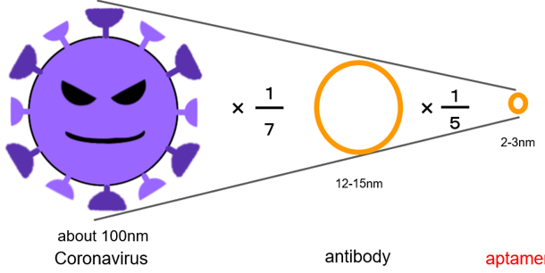
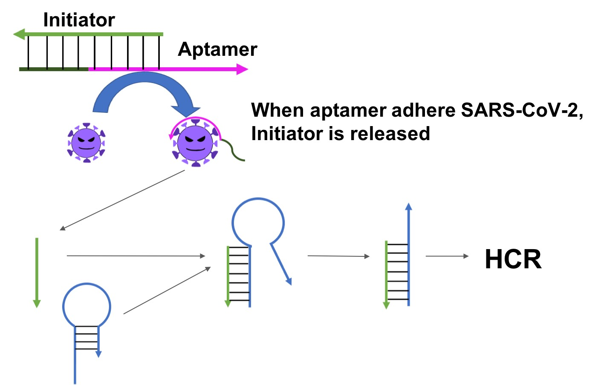

Solution
In this situation, we thought about making a test kit that is easily done at home without special knowledge. By creating a test kit that anyone can use, it is expected that the threshold of the test will be lowered, especially making it easier to test and detect asymptomatic patient. The requirements for a new test kit are that it can be used by people without specialized knowledge. And it does not need special machines like PCR test, and the test kit is inexpensive.
The brief introduction
Our idea is that the color change of the test kit solution gives a visible result whether the subject is positive or not. We use the aggregation effect of gold nanoparticles and hybridization chain reaction (HCR) to realize the color change of the solution(1)(2).
Comparison with the common method
We focused on aptamers instead of antibodies and antigens, which are often used in conventional PCR method. Aptamers are those that react specifically with a particular molecule.
Aptamers have some advantages over antibodies and antigens(3). First point is the size of against coronavirus. Their size are 2-3nm and it is smaller than antibody(12-15 nm). We thought that the smaller size would bind more aptamers to the new coronavirus spike protein. Second point is the ease of DNA sequence design. If the sequence that specifically reacts with the protein is clarified, it can be easily synthesized at low cost.
We propose a method that can detect coronavirus by further developing HCR, which is an isothermal chain reaction. By combining this aptamer with an initiator, it becomes the starting point of a sequence of reactions. When the aptamer reacts with the spike protein, the single strand on the aptamer side binds to the spike protein and an initiator is produced. When this initiator reacts with the hairpin DNA, the HCR reaction starts.
PCR test is expensive due to using a technical machine and vulnerable to contamination. An RNA extraction solution is used in the PCR test, but a solution containing various chemicals, such as saliva, cannot be used for the test(4). On the other hand, HCR does not need expensive enzymes and machines for reverse transcribing RNA.
The reason to target the spike protein
Many tests focus on the RNA inside the SARS-CoV-2. However, when the tests target the RNA, it must be extracted by breaking the membrane called the envelope without breaking the structure of the RNA(5). The process is time-consuming and costly, and requires specialized knowledge and machines. This does not meet our requirement that “ordinary people can do not at Home”. Therefore, we focused on the spike protein on the surface of the SARS-CoV-2
Reference
(1)Dirks, Robert M., and Niles A. Pierce. "Triggered amplification by hybridization chain reaction." Proceedings of the National Academy of Sciences 101.43 (2004): 15275-15278.
(2)Liu, Pei, et al. "Enzyme-free colorimetric detection of DNA by using gold nanoparticles and hybridization chain reaction amplification." Analytical chemistry 85.16 (2013): 7689-7695.
(3)Song, Yanling, et al. "Discovery of Aptamers Targeting Receptor-Binding Domain of the SARS-CoV-2 Spike Glycoprotein." (2020).
(4)Bustin, S. A. "INVITED REVIEW Quantification of mRNA using real-time reverse transcription PCR (RT-PCR): trends and problems." Journal of molecular endocrinology 29 (2002): 23-39.
(5)Schoeman, Dewald, and Burtram C. Fielding. "Coronavirus envelope protein: current knowledge." Virology journal 16.1 (2019): 1-22.